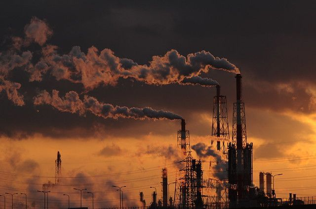
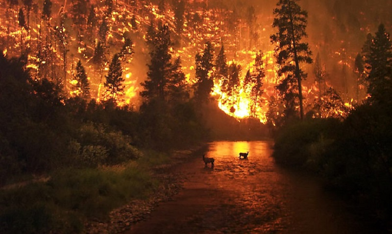
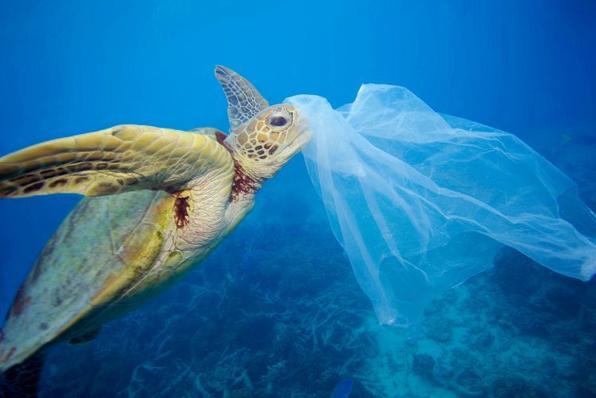
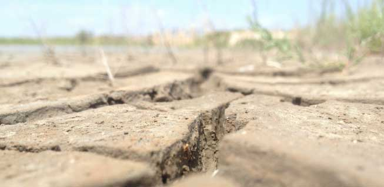
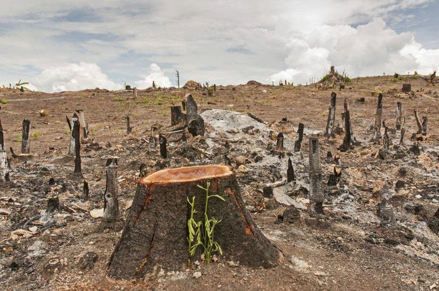
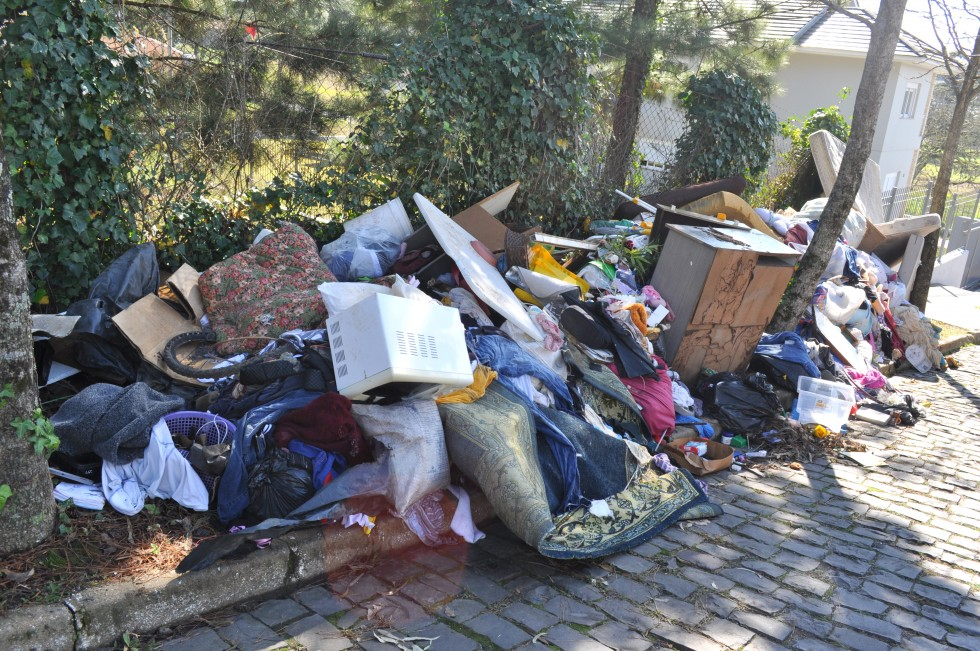

Meio ambiente faz referência a todos os recursos naturais necessários para a sobrevivência e o desenvolvimento da sociedade. A sustentabilidade busca o uso racional destes recursos naturais sem comprometer o meio ambiente preservando o uso das gerações futuras. É o ambiente em que os seres estão inseridos, bem como suas condições ambientais, biológicos, físicos e químicos. Ou seja, quando falamos de recursos naturais, estamos basicamente fazendo referência ao meio ambiente, pois tudo que utilizamos no nosso dia-a-dia depende diretamente ou indiretamente dele.
Preservar o meio ambiente, dessa forma, se torna um dos principais princípios da sustentabilidade.
Dados levantados por cientistas vinculados ao IPCC afirmam que o século XX, em razão dos desdobramentos ambientais das Revoluções Industriais, foi o período mais quente da história desde o término da última glaciação, com um aumento médio de 0,7ºC nas temperaturas de todo o planeta.
Ainda segundo o órgão, as previsões para o século XXI não são nada animadoras, pois haverá a elevação de mais 1ºC, em caso de preservação da atmosfera, ou de 1,8ºC a 4ºC, em um cenário mais pessimista e que apresente maior poluição.
A Educação Ambiental corresponde à conscientização ambiental para questões que envolvem a valorização do meio ambiente e o comprometimento de atitudes voltadas à sua preservação.
A importância da educação ambiental reside na formação de cidadãos conscientes. Ela visa o aumento de práticas sustentáveis, bem como a redução de danos ambientais.
Poluição |
Degradação do Solo |
Desmatamento |
Descarte irregular e irresponsável
Poluição
Ar
A poluição do ar está diretamente relacionada com vários problemas de saúde, principalmente respiratórios e cardiovasculares.
O desenvolvimento dos grandes centros urbanos e o consumo cada vez mais exagerado dos humanos são os grandes responsáveis por tornar o mundo cada dia mais poluído. A poluição é um problema real que atinge o ar, a água e o solo, tornando-se cada vez mais acentuada graças às nossas atitudes.
A poluição do ar pode ser definida como a presença de substâncias provenientes de atividades humanas ou da própria natureza que podem colocar em risco a qualidade de vida dos seres vivos. O ar poluído pode causar sérios problemas ao homem e a outros seres, portanto, ele é impróprio e nocivo.
Dentre os principais poluentes do ar, podemos citar a fumaça, partículas inaláveis, dióxido de enxofre, ozônio, dióxido de nitrogênio e monóxido de carbono. Essas substâncias podem causar sérios danos à saúde de homem. O monóxido de carbono, por exemplo, diminui a capacidade do sangue de transportar oxigênio pelo corpo, podendo causar hipóxia tecidual. Já o ozônio possui papel oxidante e citotóxico, podendo causar irritação nos olhos e diminuição da capacidade pulmonar, por exemplo. O dióxido de enxofre relaciona-se com irritações nas vias aéreas superiores, assim como o dióxido de nitrogênio. Esse último também pode provocar danos graves aos pulmões. Qualquer substância que esteja no ar e seja capaz de torná-lo impróprio e prejudicial à saúde é chamada de poluente atmosférico. Dentre as principais fontes de emissão de poluentes, podemos destacar as indústrias, a queima de lixo, os veículos automotores e aviões. Vale destacar que alguns processos naturais levam à emissão de poluentes, como é o caso das erupções vulcânicas, tempestades de areia e incêndios florestais não criminosos.

Como diminuir a poluição do ar?
Podemos seguir uma série de medidas que podem auxiliar no combate à degradação desse recurso natural essencial à vida.
- Reduzir a utilização de agrotóxicos e outros insumos químicos agrícolas, optando preferencialmente pelas alternativas biológicas;
- Promover a conservação e ampliação das áreas florestais, reservas ambientais e áreas de proteção ambiental naturais, além de reflorestar áreas degradadas;
- Incentivar a utilização de meios de transporte alternativos ao carro, bem como a implantação de sistemas de transporte coletivo de qualidade;
- Manutenção e criação de áreas verdes nos espaços urbanos, como bosques, praças, parques e corredores verdes;
- Incentivar o uso de instrumentos que minimizem as emissões de poluentes, como catalisadores automotivos, filtros nas fábricas e usinas, tratamento de resíduos etc.
- Promover o controle e a fiscalização das queimadas em lavouras, áreas de pastagens e em regiões de cobertura vegetal natural.

Poluição dos Oceanos
A poluição marinha ocorre porque tanto os mares quanto os oceanos recebem diariamente, em todo o mundo, uma infinidade de poluentes, como esgoto doméstico, industriais, lixo sólido, que são levados pelos rios que deságuam no mar.
"Estimativas revelam que cerca de 14 bilhões de toneladas de lixo são acumuladas nos oceanos todos os anos. Outra prática que contribui para a poluição marinha são os navios petroleiros e os oleodutos, pois podem causar contaminação das águas quando ocorrem vazamentos e quando os tanques dos navios são lavados, já que a água suja com petróleo é jogada no mar, esse tipo de poluição marinha é chamada de "maré negra".
A imensa quantidade de substâncias lançadas nos oceanos produz o aparecimento de organismos que prejudicam o desenvolvimento da vida marinha e também comprometem o percentual de alimentos.
É importante salientar que os oceanos não são separados, isso significa que as poluições estão “globalizadas”, assim como os impactos.

Quais são os prejuízos que essa poluição provoca?
- Praias sujas e impróprias para lazer e pesca;
- Contaminação das águas, principalmente com a presença de coliformes fecais vindos de esgotos não tratados, além de outras bactérias nocivas, prejudicando os animais e o próprio ser humano;
- Ocorrências de resíduos químicos, como cloro, mercúrio, cromo e chumbo, que contaminam os peixes, o ambiente e as pessoas;
- Redução de ambientes de pesca e cultivo das comunidades tradicionais;
- Impacto nas regiões estuarinas, os manguezais, os corais e as baías – locais de procriação de centenas de espécies da fauna marinha. Justamente aí que estão os maiores efeitos da poluição nos mares, com despejo de resíduos e esgotos de cidades próximas, da agricultura e das industrias.
Como resolver o problema da poluição nos mares?
- Realizar a separação dos resíduos recicláveis;
- Priorizar produtos que não utilizem embalagens plásticas;
- Utilizar garrafas e copos ecológicos, substituindo as garrafas PET e copos plásticos;
- Aprimorar a gestão de resíduos das cidades, com programas de reciclagem eficientes e com educação ambiental, estimulando a adesão;
- Fiscalizar e regularizar fontes de esgoto (doméstico e industrial) não tratado;
- Aprimorar o zoneamento das cidades, respeitando a zona costeira, juntamente com os mangues e restingas;
- Se fumar, descarte as bitucas em locais apropriados;
- Participar de programas voluntários de coleta de resíduos nas praias;
- Reduzir o consumo e priorizar empresas ambientalmente conscientes.

Voltar ao Topo
Degradação do Solo
Em síntese, a degradação do solo pode ser definida como todo processo relacionado a sua destruição. Nesse sentido, um solo degradado pode sofrer perda de nutrientes e estrutura, acidificação, salinização e redução de matéria orgânica e permeabilidade.
O processo de degradação do solo, bem como suas causas e consequências, ocorre por variados motivos e resulta na perda da produtividade, além de causar impactos socioambientais. Esse problema geralmente é causado pelo mau uso e má conservação, consequências de processos naturais ou das atividades humanas.
A ocorrência dessa situação pode estar ligada à ocupação não planejada e pouco sustentável. Com isso, o solo manifesta desequilíbrio nutricional, queda da atividade biológica, compactação e pulverização, perda da estrutura, acidificação, salinização, diminuição dos níveis de matéria orgânica e da permeabilidade, entre outros.
As principais formas de degradação do solo são:
- Erosão: A erosão é um processo natural, que pode ser intensificado pela atividade humana. Em resumo, ele consiste no desgaste dos solos e das rochas devido à ações de agentes externos, principalmente, o vento e a chuva.
- Lixiviação: A lixiviação é responsável por causar a infertilidade do solo. Isso ocorre devido à lavagem superficial dos sais minerais do solo. Na prática, a lixiviação pode ser provocada pelo desmatamento, chuvas intensas ou uma soma desses dois fatores.
- Compactação do solo: A compactação é caracterizada pelo aumento da densidade do solo e a perda da porosidade. Os principais motivos desse tipo de degradação são o pisoteio do gado, o tráfego de máquinas agrícolas e o manejo do solo em condições inadequadas de umidade
Em geral, solos compactados são impermeáveis, o que impede a penetração de água e nutrientes, causando sua infertilidade.
- Salinização: A salinização consiste no processo de aumento dos sais minerais existentes, a ponto de afetar a produtividade dos solos de uma determinada região."Resumidamente, a ocorrência da salinização está relacionada com a prática da irrigação que se utiliza de água com elevado teor de sais. Assim, com a evaporação da água, os sais acumulam-se no solo e aumentam a sua salinidade.
- Desertificação: O processo de desertificação consiste na degradação e no esgotamento dos solos, sendo que ocorre em regiões com baixos índices de chuvas anuais. No geral, esse fenômeno acarreta a esterilização do solo devido à alta taxa de evaporação da água, que é maior que a infiltração, fazendo com que a terra perca seus nutrientes e a capacidade de gerar qualquer tipo de vegetação.
- Laterização: A laterização está associada a lavagem exaustiva ocasionada pelo aprofundamento da lixiviação. Este processo deforma o solo, causando a formação de crosta na superfície da terra. O processo de laterização é mais comum em áreas úmidas e quentes de climas tropicais e pode ser intensificado por queimadas e desmatamentos, pois a vegetação ajuda a proteger os solos do elevado desgaste proporcionado pela água das chuvas.
Formas de evitar a degradação do solo
- Plantio Correto: Como forma de evitar a perda de nutrientes, é importante aplicar um plantio correto no solo e priorizar insumos de qualidade, boas sementes, plantar na época correta e utilizar um bom sistema de irrigação.
- Manejo adequado: O manejo adequado também é essencial para evitar a degradação. Para realizá-lo é fundamental utilizar a adubação, manutenção de matéria orgânica e planejamento de rotação de culturas.
- Sistema de irrigação: Investir em um bom sistema de irrigação vai ajudar a melhorar valor nutricional do solo e evitar a salinização do terreno. Assim, vai reduzir a chance do solo se tornar improdutivo.
- Rotação de culturas: A rotação de culturas é responsável por alterar anualmente as espécies vegetais distribuídas em uma mesma região agrícola. Essa prática promove a diversificação dos cultivos e melhora as características do solo, auxiliando na reposição de matéria orgânica, no controle de ervas daninhas e na proteção contra agentes físicos de intemperismo.

Voltar ao Topo
Desmatamento
O desmatamento é um dos mais graves problemas ambientais do nosso tempo. Além de devastar as florestas e os recursos naturais, ele compromete o equilíbrio do planeta em seus diversos elementos, incluindo os ecossistemas, afetando gravemente também a economia e a sociedade. Como não poderia deixar de ser, essa prática causa danos, muitas vezes irreversíveis, às populações que ali habitam, comprometendo a biodiversidade.
Problema
Perda da Biodiversidade
As consequências provocadas pelo desmatamento são devastadoras. E a primeira afetada é a biodiversidade local. Uma vez que há a destruição das florestas, perde-se o habitat natural de muitas espécies, contribuindo para a morte de animais e até mesmo a extinção dos tipos endêmicos.
Água e solo
O desmatamento gera consequências negativas também sobre a água e os solos. Como as florestas são responsáveis pela regulação de cerca de 57% das águas doces superficiais do mundo, elas contribuem fornecendo umidade para o ambiente.
Ou seja, a retirada delas implica a alteração do equilíbrio climático de muitas regiões, sem falar na intensificação do efeito estufa.
Além disso, as florestas melhoram a drenagem dos terrenos, e sua ausência intensifica os deslizamentos de terra em áreas de grande inclinação, acentua as inundações, facilita a erosão do solo e a desertificação.
Doenças e outros danos ao ser humano
O ser humano é outro que sofre as consequências das próprias ações. Como já foi dito, 1,6 bilhão de pessoas dependem hoje, direta ou indiretamente, das atividades ligadas às florestas.
Com o desmatamento, as pessoas se privam não só de uma potencial produção contínua de madeira, como também de muitos outros produtos naturais valiosos, como frutos, amêndoas, fibras, resinas, óleos e substâncias medicinais.
Solução
Por todos esses motivos, a ONU e outros organismos internacionais, bem como inúmeras entidades regionais, reconhecem e enfatizam sumariamente que a solução deve levar em conta fatores locais e globais em um projeto multidisciplinar articulado em larga escala.
Devem estar envolvidos não só cientistas, governos, empresas e instituições, mas também, e principalmente, a população, já que ela é a origem e o fim de todos os processos. O caminho para isso é a educação e incentivos diversos para o esclarecimento a respeito dos benefícios gerados pelas florestas e para a mudança de formas de pensamento e hábitos de produção e consumo que levam ao desflorestamento.

Voltar ao Topo
Descarte irregular e irresponsável
Problema
Você já parou para pensar que o descarte irregular de resíduos é origem para diversos problemas?
Móveis, pneus, podas de árvores, lixo doméstico, resíduos de construção civil e até mesmo restos de animais; poucos itens escapam ao destino de serem jogados em praças, terrenos e demais locais a céu aberto. Com isso, uma série de doenças e prejuízos ao meio ambiente surgem, estabelecendo assim uma relação quase simbiótica.
O descarte irregular de resíduos é um problema crônico nas cidades brasileiras e, segundo o último levantamento do Ministério do Meio Ambiente, pelo menos 56% dos municípios no País recorrem a depósitos inadequados na hora de dar adeus ao lixo que produzem.
De acordo com Adriana Maria Nolasco, professora do Departamento de Ciências Florestais da Escola Superior de Agricultura Luiz de Queiroz (Esalq), da USP, em Piracicaba, “os danos dessa prática são incontáveis, alguns dos principais são a contaminação do solo, a poluição do ar e os riscos à saúde pública”.
No Brasil, o tratamento de doenças provocadas pela exposição ao lixo descartado inadequadamente custou aos cofres públicos cerca de US$ 370 milhões só em 2015, segundo estimativa da Associação Internacional de Resíduos Sólidos.
A professora Adriana conta que “é necessário fazer um investimento pesado em políticas públicas para que existam locais adequados de coleta e separação de materiais sólidos”. No entanto, ressalta que apenas a política não é capaz de resolver o problema, afinal, “o gerador do lixo também é encarregado de procurar meios para descartar resíduos de forma adequada”, ou talvez não descartar, e essa questão caminha por uma linha tênue.
A origem do problema está no contexto cultural em que grande parte da população cresceu, “sem instrução, amparo e busca pela conscientização do descarte adequado do lixo, que é um dever de todos”, explica a professora.
Segundo a Associação Brasileira de Empresas de Limpeza Pública, em 2016 o número de lixões no Brasil era de 2.900, mas hoje a quantia já passa de 3.300. Frente à dificuldade em frear a produção e o consumo de bens, as boas e velhas práticas de reciclagem e reutilização permanecem como os meios mais viáveis para impedir o descarte irregular e os estragos que deixam para trás.
Porém, essa é outra barreira a ser superada. De acordo com estudo realizado em 2017 pelo Instituto de Pesquisa Econômica Aplicada (Ipea), apenas 13% dos resíduos sólidos do Brasil são reciclados, causando um prejuízo de aproximadamente R$ 5,7 bilhões por ano.
Solução
Niterói premiará moradores que reduzirem as emissões de carbono
Em Niterói, município metropolitano do Rio de Janeiro, será implementado um programa de neutralização de carbono, o qual premiará moradores que reduzirem suas emissões de carbono. Com previsão para iniciar esse mês, o projeto beneficiará os residentes da Favela do Caramujo, um dos bairros da cidade.
Inicialmente, o programa vai capacitar os moradores a agirem de forma ativa no processo de redução das emissões de gases de efeito estufa (GEE). Depois, a medida que estes forem alcançando resultados na mitigação de carbono, receberão pagamentos em Arariboia.
A Arariboia é uma moeda social criada pela Prefeitura de Niterói, a qual é aceita por mais de 30 mil estabelecimentos comerciais. Considerada a primeira moeda do clima do país, ela será entregue aos moradores que atingirem as metas de redução de carbono estipuladas.
Os participantes da ação poderão ganhar de 250 a 750 reais como prêmio. Para obtê-los, terão que implementar algumas práticas ecológicas no seu cotidiano como o plantio de mudas, a separação e reciclagem dos resíduos, a compostagem de lixo orgânico, a diminuição do gasto de energia e o uso de bicicleta.
O programa de neutralização do carbono é considerado pioneiro no país. Este, de acordo com Prefeito de Niterói, Axel Grael, será monitorado por assistentes sociais do próprio município que darão orientação e acompanharão as atividades dos moradores.
Reciclagem poderá gerar desconto no IR
Congresso Nacional restaurou a dedução no imposto de renda de valores utilizados em projetos de reutilização, tratamento e reciclagem de resíduos sólidos. A medida se deu com a promulgação de trechos vetados na Lei 14.260, de 8 de dezembro de 2021. Esta lei estabelece incentivos à indústria da reciclagem.
CA partir de agora, empresas e pessoas físicas poderão apoiar financeiramente a compra de equipamentos, veículos, ou treinamentos em cooperativas, além da construção de postos de entrega voluntária e centrais de separação de recicláveis em troca de dedução de imposto.
Pessoas físicas vão receber 6% de desconto e os empresários, 1%. O relator da proposta no Senado, Luiz Carlos Heinze, do PP do Rio Grande do Sul, argumentou que o incentivo a projetos de reciclagem vai contribuir para a redução da quantidade de de lixo em aterros sanitários.
O presidente da Comissão de Meio Ambiente, senador Jaques Wagner, lembra que o tratamento de lixo reciclado é uma forma de gerar emprego e renda.

© Todos os direitos reservados
Desenvolvedores: Quarteto Ambiental
E-mail: quartetoambientaloficial@gmail.com
Voltar ao topo da página